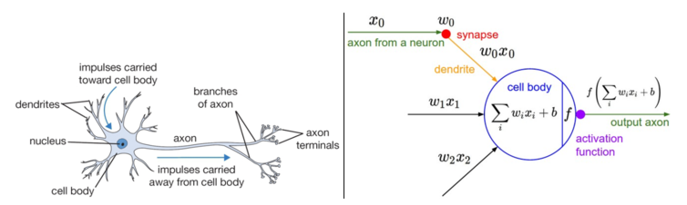
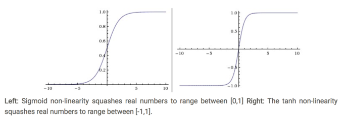
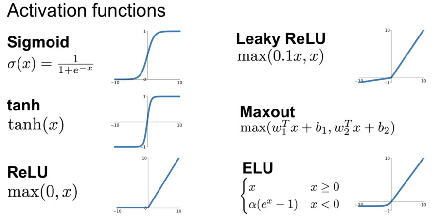
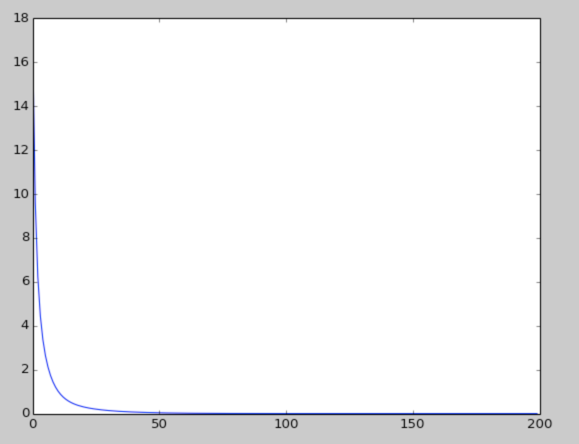
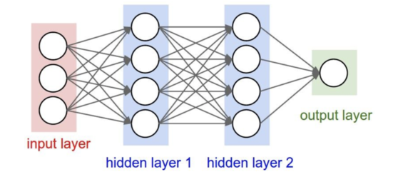

神经网络
Table of Contents
神经网络算法领域最初是被对生物神经系统建模这一目标启发，但随后与其分道扬镳，成为一个工程问题，并在机器学习领域取得良好效果。然而，讨论将还是从对生物系统的一个高层次的简略描述开始，因为神经网络毕竟是从这里得到了启发。
单个神经元
大脑的基本计算单位是神经元（neuron）。人类的神经系统中大约有 860 亿个神经元，它们被大约 1014-1015 个突触（synapses）连接起来。下面图表的左边展示了一个生物学的神经元，右边展示了一个常用的数学模型。每个神经元都从它的树突获得输入信号，然后沿着它唯一的轴突（axon）产生输出信号。轴突在末端会逐渐分枝，通过突触和其他神经元的树突相连。

一个神经元前向传播的实例代码如下
class Neuron(object):
# ...
def forward(self, inputs):
""" assume inputs and weights are 1-D numpy arrays and bias is a number """
cell_body_sum = np.sum(inputs * self.weights) + self.bias
firing_rate = 1.0 / (1.0 + math.exp(-cell_body_sum)) # sigmoid activation function
return firing_rate
换句话说，每个神经元都对它的输入和权重进行点积，然后加上偏差，最后使用非线性函数（或称为激活函数）
常用的激活函数

Sigmoid 函数
前面说到了它的表达式为
\begin{align} \sigma(x) = 1 / (1 + e^{-x}) \end{align}它输入实数值并将其“挤压”到 0 到 1 范围内。更具体地说，很大的负数变成 0，很大的正数变成 1。 现在实际不使用它了，原因主要它有如下的缺点：
Sigmoid 函数饱和使梯度消失。
sigmoid 神经元有一个不好的特性，就是当神经元的激活在接近 0 或 1 处
时会饱和：在这些区域，梯度几乎为 0。回忆一下，在反向传播的时候， 这个（局部）梯度将会与整个损失函数关于该门单元输出的梯度相乘。因此，如果局部梯度非常小，那么相乘的结果也会接近零，这会有效地“杀死”梯度，几乎就有没有信号通过神经元传到权重再到数据了。
- Sigmoid 函数的输出不是零中心的。
Tanh
它的定义就是简单放大的 Sigma
\begin{align} \tanh(x) = 2 \sigma(2x) -1 \end{align}ReLU
The Tectified Linear Unit(ReLU) 在最近几年变得非常的流行。 它有很多的优点：
- 相较于 sigmoid 和 tanh 函数，ReLU 对于随机梯度下降的收敛有巨大的加速作用
sigmoid 和 tanh 神经元含有指数运算等耗费计算资源的操作，而 ReLU 可以简单地通过对一个矩阵进行阈值计算得到。
缺点来说：
在训练的时候，ReLU 单元比较脆弱并且可能“死掉”。
举例来说，当一个很大的梯度流过 ReLU 的神经元的时候，可能会导致梯度更新到一种特别的状态，在这种状态下神经元将无法被其他任何数据点再次激活。如果这种情况发生，那么从此所以流过这个神经元的梯度将都变成 0。
Leaky ReLU
Leaky ReLUs are one attempt to fix the “dying ReLU” problem. Instead of the function being zero when x < 0, a leaky ReLU will instead have a small negative slope (of 0.01, or so).
Maxout
这个以后加上
总结一下
一图胜千言：

一个二层神经网络的实现
下面我们来看下如何通过 Sigmoid 和 ReLu 激活函数来实现一个二层的神经网络。
首先是 Sigmoid 的实现
import numpy as np
from numpy.random import randn
import matplotlib.pyplot as plt
N, D_in, H, D_out = 64, 1000, 100, 10
x, y = randn(N, D_in), randn(N, D_out)
w1, w2 = randn(D_in, H), randn(H, D_out)
loss_col = []
for t in range(2000):
h = 1 / (1 + np.exp(-x.dot(w1)))
y_pred = h.dot(w2)
loss = np.square(y_pred - y).sum()
loss_col.append(loss)
print(t, loss, y_pred)
grad_y_pred = 2.0 * (y_pred - y)
grad_w2 = h.T.dot(grad_y_pred)
grad_h = grad_y_pred.dot(w2.T)
grad_w1 = x.T.dot(grad_h * h * (1 - h))
w1 -= 1e-4 * grad_w1
w2 -= 1e-4 * grad_w2
plt.plot(loss_col)
plt.show()
下面的激活函数式用的 ReLu:
import numpy as np
import matplotlib.pyplot as plt
# N is batch size(sample size); D_in is input dimension;
# H is hidden dimension; D_out is output dimension.
N, D_in, H, D_out = 4, 2, 30, 1
# Create random input and output data
x = np.array([[0, 0], [0, 1], [1, 0], [1, 1]])
y = np.array([[0], [1], [1], [0]])
# Randomly initialize weights
w1 = np.random.randn(D_in, H)
w2 = np.random.randn(H, D_out)
learning_rate = 0.002
loss_col = []
for t in range(200):
# Forward pass: compute predicted y
h = x.dot(w1)
h_relu = np.maximum(h, 0) # using ReLU as activate function
y_pred = h_relu.dot(w2)
# Compute and print loss
loss = np.square(y_pred - y).sum() # loss function
loss_col.append(loss)
print(t, loss, y_pred)
# Backprop to compute gradients of w1 and w2 with respect to loss
grad_y_pred = 2.0 * (y_pred - y) # the last layer's error
grad_w2 = h_relu.T.dot(grad_y_pred)
grad_h_relu = grad_y_pred.dot(w2.T) # the second laye's error
grad_h = grad_h_relu.copy()
grad_h[h < 0] = 0 # the derivate of ReLU
grad_w1 = x.T.dot(grad_h)
# Update weights
w1 -= learning_rate * grad_w1
w2 -= learning_rate * grad_w2
plt.plot(loss_col)
plt.show()
这个是 Loss function 的迭代结果：

神经网络的基本结构

# forward pass of 3-layer neural network
f = lambda x: 1.0 / (1.0 + np.exp(-x)) # activation function
x = np.random.randn(3, 1)
h1 = f(np.dot(W1, x) + b1) # calculate first hidden layer activation
h2 = f(np.dot(W2, h1) + b2) # calculate second hidden layer activation
out = np.dot(W3, h2) + b3 # output neuron
深入阅读
- Deep Learning book in press by Bengio, Goodfellow, Courville, in particular Chapter 6.4